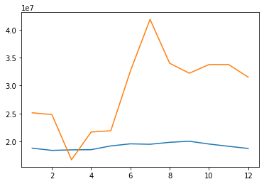

CNN - Convolutional Neural Network¶
Deep Learning…..
from numpy import array
from keras.models import Sequential
from keras.layers import Dense
from keras.layers import Flatten
from keras.layers.convolutional import Conv1D
from keras.layers.convolutional import MaxPooling1D
from datetime import timedelta, date
from dateutil. relativedelta import relativedelta
import pickle
import pandas as pd
import matplotlib.pyplot as plt
dados = pd.read_csv('datasets/dados.csv')
dados = dados.rename(columns={'Unnamed: 0':'mes'})
dados = dados.set_index('mes')
No Passo 2, a partir do teste de Granger, as seguintes variáriveis foram escolhidas para entrarem no modelo:
dados = dados[['ibc','pib','consumo','ICST-R','geracaoGWh','IndGeral','total']]
dados
| ibc | pib | consumo | ICST-R | geracaoGWh | IndGeral | total | |
|---|---|---|---|---|---|---|---|
| mes | |||||||
| 2014-01-01 | 2.75 | 455935.0 | 4.027976e+07 | 97.8 | 50045.962407 | 53.1 | 13427897 |
| 2014-02-01 | 3.13 | 450358.8 | 4.165349e+07 | 96.7 | 46459.730274 | 52.3 | 14152120 |
| 2014-03-01 | 3.09 | 462159.8 | 4.026943e+07 | 96.3 | 48004.277170 | 52.4 | 13710770 |
| 2014-04-01 | 2.37 | 468767.5 | 3.959185e+07 | 92.6 | 45412.583753 | 49.2 | 12602895 |
| 2014-05-01 | 2.23 | 473347.1 | 3.910050e+07 | 94.6 | 44890.282526 | 47.9 | 14603442 |
| ... | ... | ... | ... | ... | ... | ... | ... |
| 2020-08-01 | -3.35 | 628818.8 | 3.912152e+07 | 87.8 | 45954.347797 | 57.0 | 33983713 |
| 2020-09-01 | -3.56 | 632047.2 | 4.020856e+07 | 91.5 | 46045.040560 | 61.6 | 32205815 |
| 2020-10-01 | -3.94 | 660199.5 | 4.245064e+07 | 95.2 | 46098.056273 | 61.8 | 33749277 |
| 2020-11-01 | -4.06 | 666928.9 | 4.100828e+07 | 93.8 | 45883.704482 | 62.9 | 33762169 |
| 2020-12-01 | -3.99 | 676371.9 | 4.187399e+07 | 93.9 | 45799.031123 | 63.1 | 31490103 |
84 rows × 7 columns
# split a multivariate sequence into samples
def split_sequences(sequences, n_steps):
X, y = list(), list()
for i in range(len(sequences)):
# find the end of this pattern
end_ix = i + n_steps
# check if we are beyond the dataset
if end_ix == len(sequences):
break
# gather input and output parts of the pattern
seq_x, seq_y = sequences[i:end_ix, :-1], sequences[end_ix, -1]
X.append(seq_x)
y.append(seq_y)
return array(X), array(y)
# número de steps para considerar no modelo
n_steps = 12
# primeiro mês para prever a demanda (janeiro de 2020)
# resultado das vendas de janeiro é função dos eventos ocorrido em janeiro
# mais os eventos (variáveis) ocorridos em n-1 steps atrás
dataset = dados.to_numpy()
# dados de 2014 até final 2019
train = dataset[0:72]
# valores da variável totoal de jan/2020 até dez/2020
# este é o que queremos prever
y_2020 = dataset[72:84,-1]
# convert into input/output
X, y = split_sequences(train, n_steps)
print(X.shape, y.shape)
# the dataset knows the number of features, e.g. 2
n_features = X.shape[2]
(60, 12, 6) (60,)
model = Sequential()
model.add(Conv1D(filters=64, kernel_size=2, activation='relu' , input_shape=(n_steps, n_features)))
model.add(MaxPooling1D(pool_size=2))
model.add(Flatten())
model.add(Dense(50, activation='relu' ))
model.add(Dense(1))
model.compile(optimizer='adam' , loss='mse' )
model.fit(X, y, epochs=1000, verbose=0)
<keras.callbacks.History at 0x1536f65e0>
#### PREDICAO dos totais em 2020 ####
# split a multivariate sequence into samples
def split_sequences_pred(sequences, n_steps):
X = list()
for i in range(len(sequences)):
# find the end of this pattern
end_ix = i + n_steps
# check if we are beyond the dataset
if end_ix == len(sequences):
break
# gather input and output parts of the pattern
seq_x = sequences[i:end_ix, :-1]
X.append(seq_x)
return array(X)
begin_ix = 72-n_steps #72 é posição onde está janeiro 2020
dataset_X_pred = dataset[begin_ix:83, :-1] #83 é novembro, pois max que vamos é até dez/20
def split_sequences_pred(sequences, n_steps):
X = list()
for i in range(12):
end = len(sequences)-i
seq_x = sequences[end-n_steps:end]
X.append(seq_x)
return array(X)
X_pred = split_sequences_pred(dataset_X_pred , n_steps)
#começa em -1 e vai diminuindo
y_pred = list()
for i in range(12):
X=X_pred[-1-i].reshape(1,n_steps,n_features)
yhat = model.predict(X, verbose=0)
y_pred.append(yhat[0][0])
y_pred/y_2020
array([0.74783938, 0.74127246, 1.10649755, 0.85420934, 0.87611349,
0.59978336, 0.46540557, 0.5834705 , 0.62160557, 0.57846786,
0.56617553, 0.59467421])
d = [1,2,3,4,5,6,7,8,9,10,11,12]
plt.plot(d,y_pred,d,y_2020)
plt.show()
